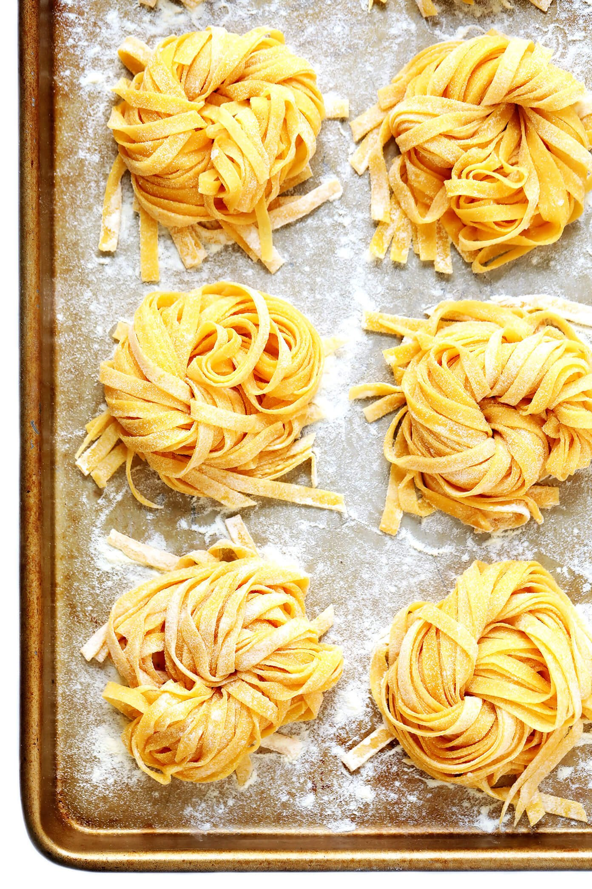

Home-Made Pasta: Be Your Own Chef

A plate of steaming hot, homemade pasta, crafted with care and
bursting with flavor. The noodles are perfectly al dente, with a
tender and chewy texture that's simply irresistible. Each forkful
is infused with the rich, savory taste of fresh herbs, garlic, and
olive oil, all melding together to create a taste sensation that
will tantalize your taste buds. As you savor the dish, you'll feel a
sense of comfort and warmth, as if you're enjoying a home-cooked meal
in a cozy Italian kitchen. The aroma alone will transport you to
another place and time, where the pleasures of good food and great
company reign supreme. Whether you're a seasoned pasta lover or a
newcomer to the world of homemade noodles, this recipe is sure to
become a staple in your kitchen. So why not roll up your sleeves,
grab your rolling pin, and give this homemade pasta recipe a try?
You won't be disappointed!
Ingredients Required:
- 2 cups all-purpose flour
- 2 large eggs
- 1 tablespoon olive oil
- 1 tablespoon water
- 1 teaspoon salt
- 1 tablespoon finely chopped fresh parsley (optional)
- 1 tablespoon finely chopped fresh basil (optional)
The Process:
- In a large mixing bowl, combine the flour and salt.
Make a well in the center of the flour mixture.
- Crack the eggs into the well, and add the olive oil, water, and
fresh herbs (if using).
- Using a fork, beat the eggs and the other ingredients together,
gradually incorporating the flour until a dough forms.
- Knead the dough on a floured surface for 10-12 minutes,
until it becomes smooth and elastic.
- Shape the dough into a ball and cover it with a clean dish towel.
Let it rest for 20-30 minutes.
- After the dough has rested, use a rolling pin or a
pasta maker to roll it out to your desired thickness.
- Cut the dough into your desired shape, such as fettuccine or linguine.
- Bring a large pot of salted water to a boil, and add the fresh pasta.
Cook for 2-3 minutes, or until the pasta is al dente.
- Drain the pasta, and serve it immediately with your favorite sauce.
This recipe makes approximately 4 servings of pasta.
Enjoy the taste of fresh, homemade pasta in the comfort of your own home!